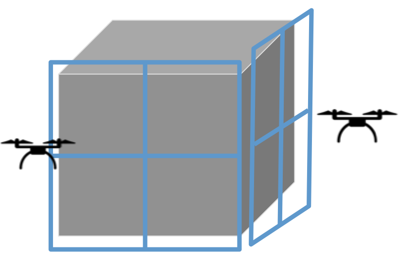
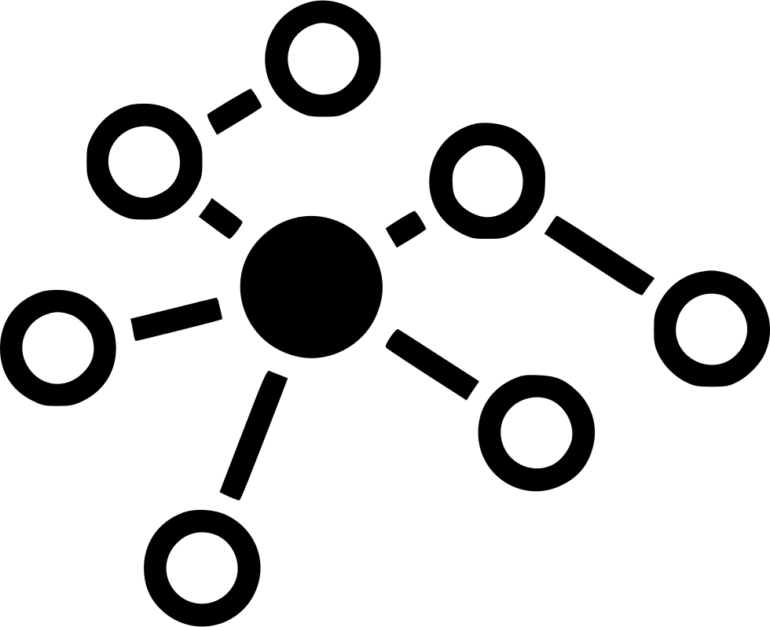

ProjectsHere's a collection of projects I've worked on. Each represents an area of interest and exploration in my research and development journey. |

|
Generating Severity-conditioned Knee Osteoarthritis X-rays Using Diffusion Neural Networks
A deep learning project focused on generating synthetic knee X-ray images with controlled osteoarthritis severity using diffusion models. |
|
 |
Deep Multi-Agent RL for 3D reconstruction
A fun project comprising of drones using Reinforcement Learning (RL) to map an object in 3D space while working in coordination. |
|
 |
Parallel Graph Search (A Case Study)
An in-depth analysis of common graph search algorithms such as Bellman-Ford, Dijkstra and A-star and their parallelized counterparts. |

|
Deep Neural Networks for Early Diagnosis of Parkinson's Disease
A project to design a deep neural network which is better at the diagnosis of Parkinson's on a crowd-sourced dataset. |
|
|
Signature Extraction from Documents using CNNs
Used the basics of Computer vision techniques in conjunction with Siamese Neural Networks to extract and verify signatures from documents. |